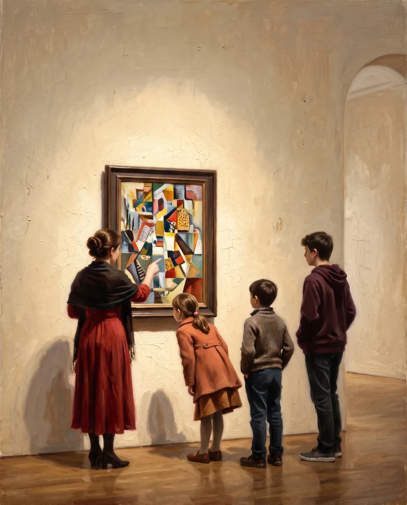
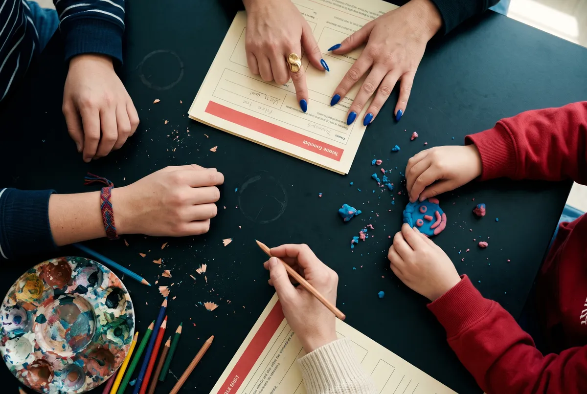
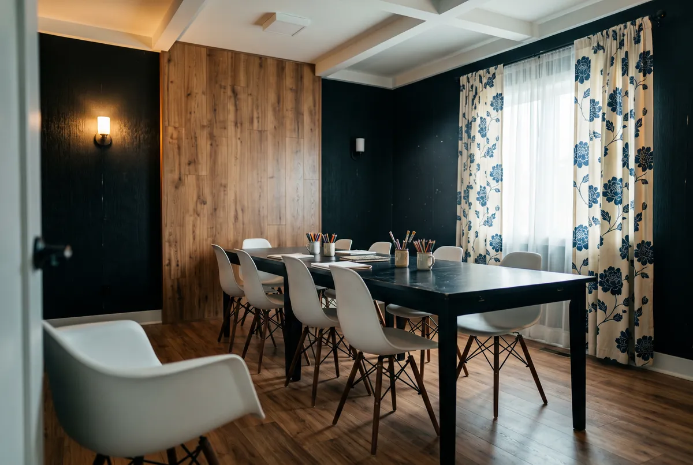
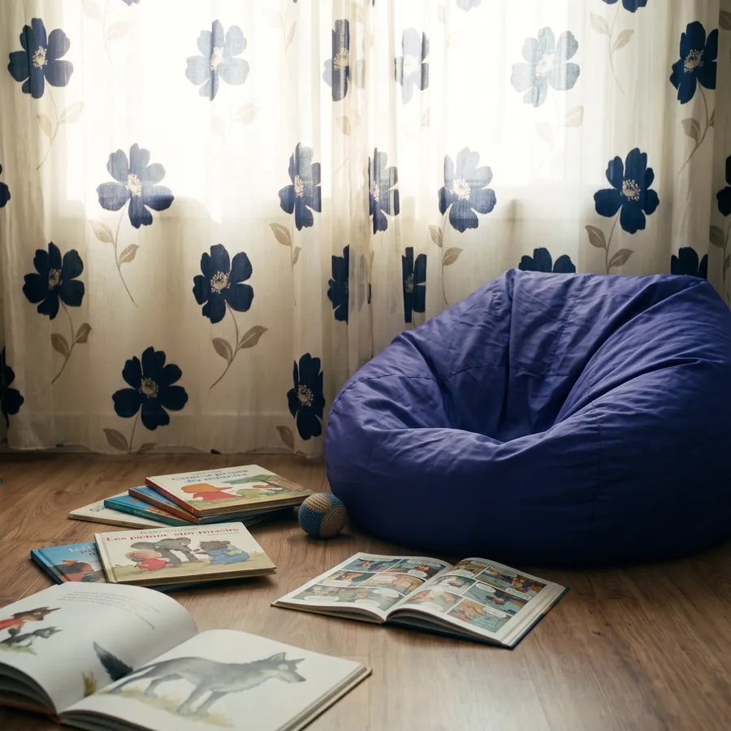

A Lang'Art
Uma escola que ensina francês e Arte
A Thiessa Monteiro é a fundadora da Lang'Art, criadora da metodologia e autora do material didático. [forma de citar e formação a confirmar]

Tudo começou numa conversa entre mãe e filha
A Thiessa morou na França aos 6 anos e foi alfabetizada em Paris. O francês sempre fez parte da história dela. A mãe tinha feito curso de artes visuais e, numa conversa sobre arte, processo criativo e aprendizagem, surgiu a pergunta: por que não unir o francês e a arte?
- 2010O projeto começa dentro de galerias de arte, com grupos de no máximo 4 alunos. Antes de entrar, dinâmicas inspiradas na arteterapia; depois, um passeio pelas obras com vocabulário em francês.
- 2019Abre o espaço físico da Lang'Art no Lago Sul, com o formato personalizado e o material próprio.
- HojeUma equipe de professores ensina com o método e o material criados pela Thiessa.

Um método, uma equipe
Quem dá as aulas é a equipe de professores da Lang'Art. Todos seguem a mesma metodologia e o mesmo material, e é isso que garante a qualidade de cada aula, seja qual for o professor.

O atelier
Uma casa no Lago Sul com mesa grande, atelier das crianças, cantinho de leitura em francês e uma varanda à sombra das árvores.


Também no atelier: Atelier de Artes
Uma proposta à parte, de artes, aos sábados. Individual ou em grupo.
Falar sobre o Atelier de Artes